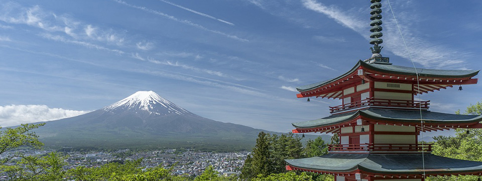

四季の移り変わり
日本の気候は温暖でおだやかで、しかも春夏秋冬という四季にめぐまれています。
春には三寒四温、三日間寒さが続くと四日間暖かい日が続き、
そうしているうちに桜が咲き、夏が来る、そして秋になり、また冬を迎える。
このように、日本の気候は少しづつ微妙に季節の顔を変えながら、こまやかに移り変わっていくのです。
春夏秋冬という四季に彩られた日本は、その恩恵ともいうべき、ゆたかな自然にもめぐまれ、
その季節に応じたさまざまな文化を育んできたのです。